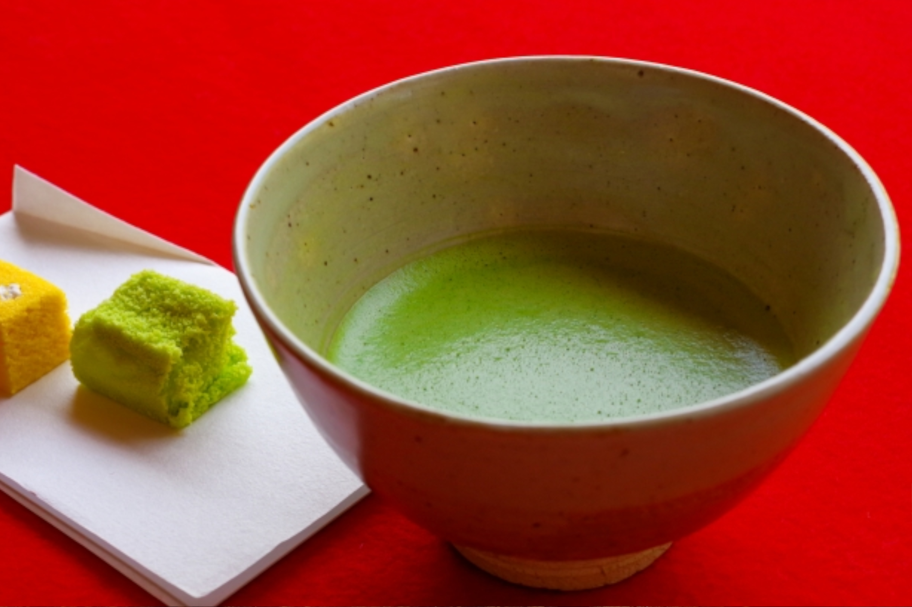
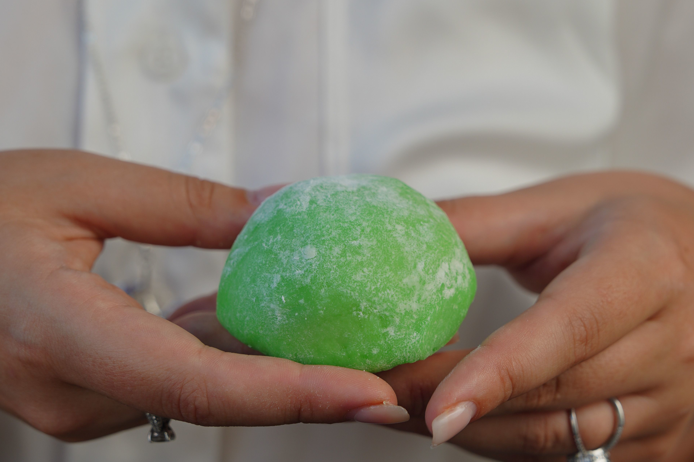
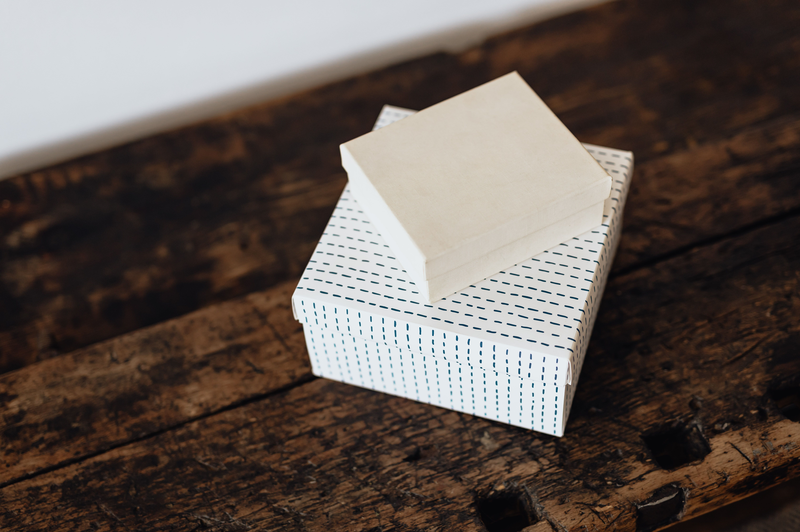
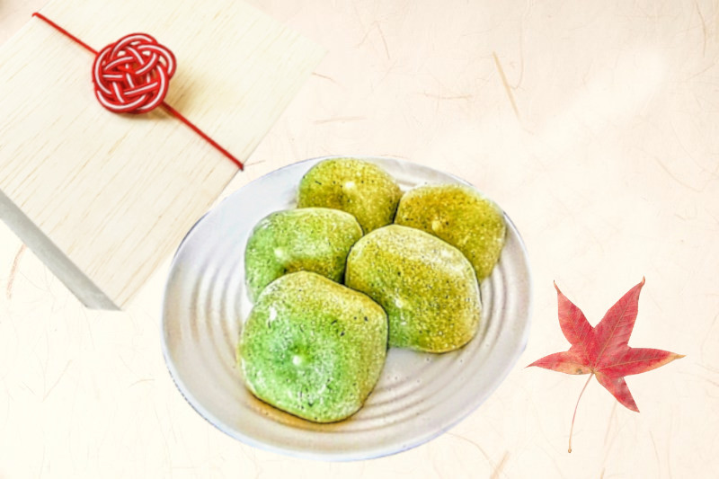

極上抹茶生大福
京都祇園菓匠 辻乃屋
京都祇園菓匠 辻乃屋
創業百余年、
受け継がれてきた
伝統の技
京都宇治の老舗茶問屋から特別に仕入れた希少な「一番摘み宇治抹茶」を100%使用。茶道でも用いられる上質な抹茶だけが持つ、深く豊かな香りと心地よいほろ苦さを、贅沢に閉じ込めました。


抹茶本来の風味を逃さない特別な製法で、何時でも立て立てのような香ばしさ。

抹茶の心地よい苦味と、上品な和三盆糖の甘味が絶妙なハーモニーを奏でます。

祇園の気品をそのまま感じされる特別な包みで、大切な型への贈り物にも最適です。

厳選した宇治抹茶を贅沢に使用した特製生大福。高級桐箱にお入れしてお届けいたします。
価格 : 3,980円 (税込・送料込)